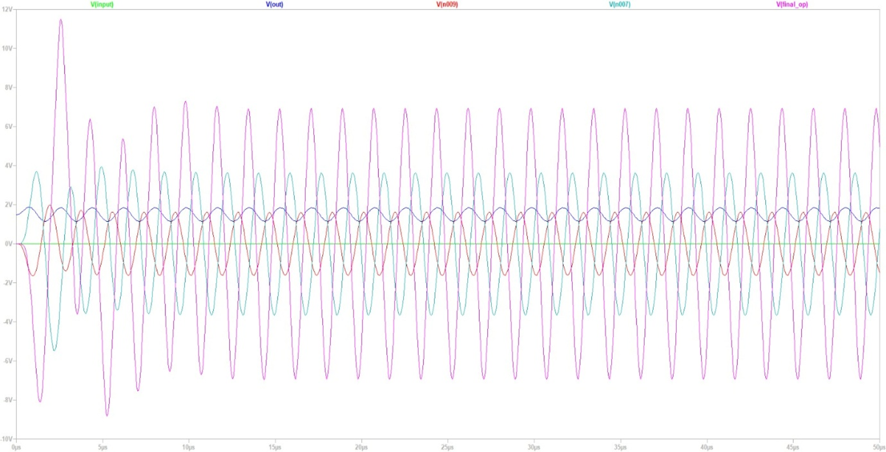
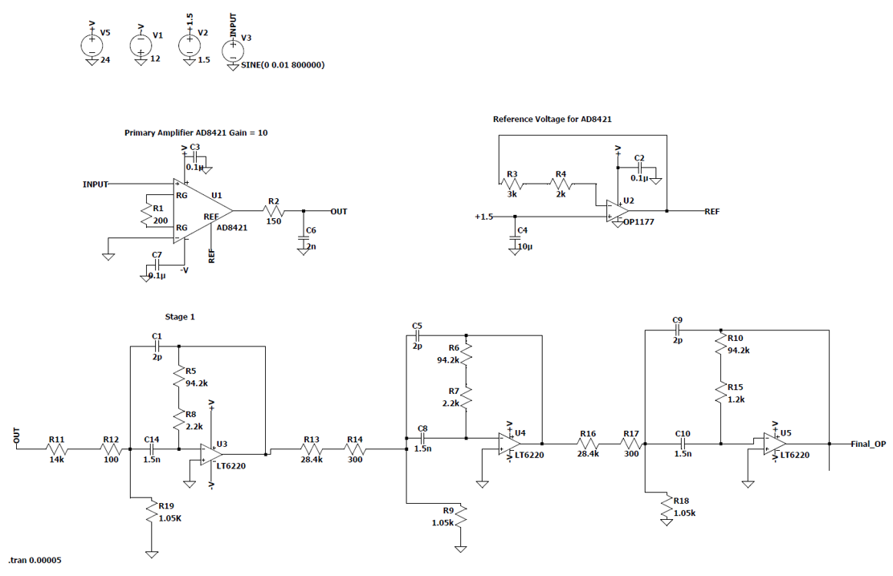
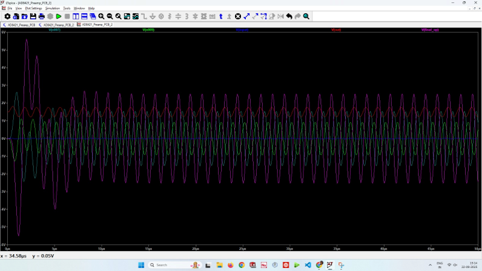
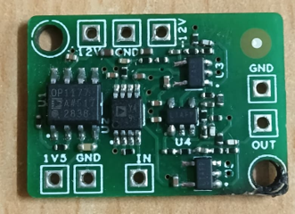

The development of a low-noise preamplifier is an essential step in acquiring and processing weak electrical signals from sensitive transducers and measurement systems. Signals generated by piezoelectric sensors, hydrophones, and other high-impedance sensing elements are often too small to be directly processed by conventional data acquisition systems. A dedicated preamplifier is therefore required to increase the signal amplitude while maintaining signal integrity, minimising noise, and preventing unwanted frequency components from affecting the measurement.
In this work, a multistage preamplifier based on the AD8421 instrumentation amplifier and LT6220 operational amplifiers was designed and simulated. The architecture combines an initial low-noise amplification stage with cascaded active filter stages to provide progressive signal amplification and frequency-selective conditioning.
The proposed design consists of three major sections: an input amplification stage, a reference voltage generation circuit, and three cascaded active amplification/filtering stages.
The first stage employs the AD8421 instrumentation amplifier, selected for its high common-mode rejection ratio (CMRR), low input voltage noise (3 nV/√Hz at 1 kHz), and high input impedance.
These characteristics make it suitable for amplifying weak sensor signals in electrically noisy measurement environments.
The AD8421 is configured for an initial gain of approximately 10, as indicated in the design schematic.
A resistor connected between its gain-setting terminals determines the amplification factor, while the reference terminal establishes the output reference level.
A separate reference voltage circuit, implemented using an OP1177 operational amplifier, generates a stable reference voltage of approximately 1.5 V.
This provides a controlled reference for the AD8421 output and helps establish the required signal operating level.
Appropriate supply bypass capacitors are incorporated to improve supply stability and suppress high-frequency interference.

Following the instrumentation amplifier, the signal is passed through three cascaded stages based on the LT6220 high-speed operational amplifier.
Rather than obtaining the entire required gain from a single amplifier, the amplification is distributed across multiple stages.
This approach provides greater flexibility in gain allocation, signal conditioning, and frequency response optimisation.
Each LT6220 stage incorporates a resistor-capacitor network in its feedback and input paths.
These components form active frequency-selective filter sections, providing frequency-dependent amplification while attenuating unwanted frequency components.
The circuit topology uses interconnected RC networks and operational amplifier feedback, characteristic of active multiple-feedback filter arrangements.
The use of capacitors in the signal and feedback paths helps establish the frequency response of each stage, while the resistors determine the amplification and filter characteristics.
The three stages are interconnected sequentially, allowing the signal amplitude to increase progressively.
The complete circuit was implemented and evaluated using LTspice.
A sinusoidal input signal with an amplitude of 10 mV was applied to investigate the amplification characteristics and transient response of the system.
The simulated waveforms demonstrated progressive amplification across the different stages.
The observed output amplitudes were approximately 0.2 V at the AD8421 output, 0.8 V after the first LT6220 stage, 1.8 V after the second stage, and 2.5 V at the final output.
The simulation demonstrated stable periodic output waveforms following the initial transient response, without apparent clipping or sustained oscillations under the simulated operating conditions.
This provided an initial validation of the proposed amplification architecture.

Following the simulation and circuit-level validation, the next phase involves translating the schematic into a physical printed circuit board (PCB). The PCB layout will incorporate separate functional sections for the instrumentation amplifier, reference voltage generation, and cascaded active filter stages. Particular attention will be given to short signal traces, proper grounding, power-supply decoupling, and separation of sensitive input circuitry from high-amplitude output sections. A compact layout with appropriate ground-plane management will help minimise parasitic coupling and electromagnetic interference. The fabricated PCB will subsequently undergo component assembly, continuity testing, power-supply verification, and experimental characterisation using a signal generator and digital storage oscilloscope. Measurements of gain, bandwidth, noise floor, frequency response, and output linearity will be performed to compare the physical implementation against the LTspice simulation. Ultimately, the developed AD8421-based multistage preamplifier is intended to serve as a low-noise signal-conditioning interface for sensitive transducer measurements, providing the amplification and filtering required before subsequent data acquisition and signal processing.
